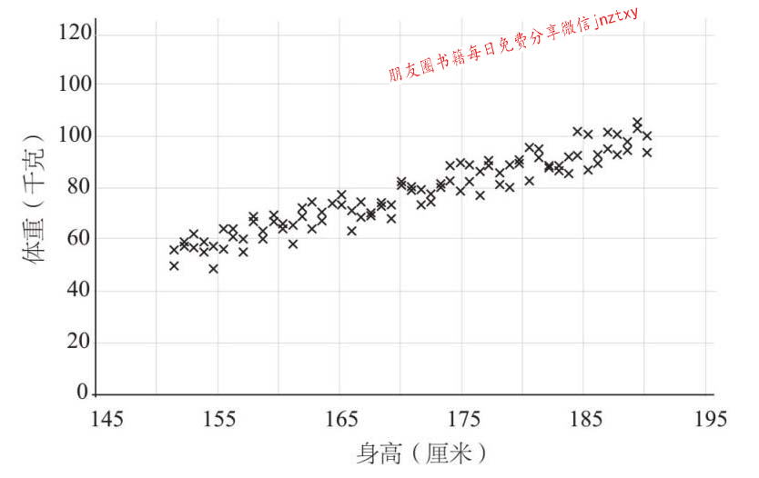
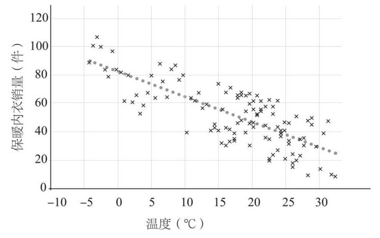
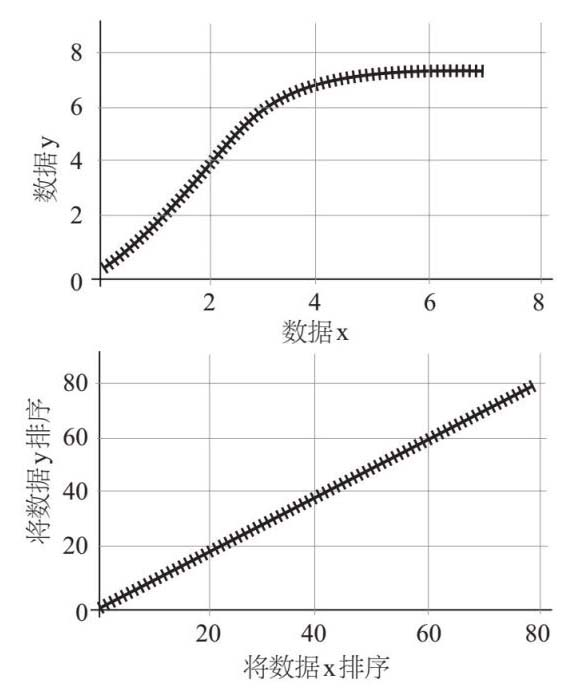
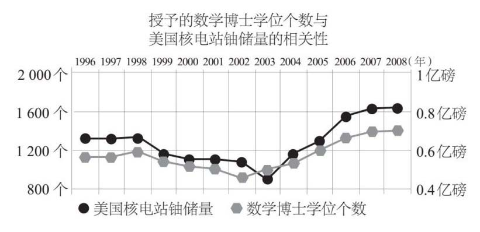

统计学除了可以总结数据外，还可以用来寻找数据之间的关系。用一个群体或样本中的两类数据作图，可以表示这两类数据的对照关系。下面是一个健身房中人的身高与体重的分布图：

我们可以看到，总的趋势是：人越高，体重越重。这和我们所预期的一样——高个子的体重比矮个子的要重。当然，还受到不同的体格和体型因素的制约。统计学家认为这是一种很强的正相关关系，因为图上的点接近直线，并且斜率是正的，两个变量会使彼此增加。
下面是一个弱负相关实例：

这种相关性是负的。根据该图，随着温度的升高，保暖内衣的销售量会下降。但是，趋势不太明显，因为点的分布虽然呈现一种趋势，但并不都靠近中间的那条线。这条线被称为最佳拟合线，总有无数多个点无限逼近这条线。
英国人弗朗西斯·高尔顿（Francis Galton，1822—1911）不仅提出了标准差的概念，而且是首个考虑了相关性并试图计算相关性的人。他痴迷于测量实例和收集数据，尤其对人体测量学感兴趣，因为他是一个狂热的优生学家。他认为应该有选择地繁殖人类，以改善健康和智力，并根除残疾和其他“不良”特征。他的研究被他的同胞卡尔·皮尔逊（Karl Pearson，1857—1936）继承，皮尔逊发现了一种计算相关性的数学方法（称为皮尔逊积矩相关系数），并画出了最佳拟合的完美直线。皮尔逊积矩相关系数从–1开始，表示一种完全负相关的关系，通过0（根本没有相关性）再到1，表示完全正相关关系。皮尔逊系数仅适用于呈线性直线关系的分布图。查尔斯·斯皮尔曼（Charles Spearman，1863—1945）另辟蹊径，通过对数据排序和将数据分级来找出相关性，而不是使用实际的数字本身。于是诞生了斯皮尔曼等级相关系数，从此以后，没有哪两次的初中地理课成绩是相同的了。下面的图显示了一些数据的分布图，这些数据显然有关系，但不是线性的。如果把数据排序并绘图，就会在第二个图中显示出更明显的线性关系。

两个事物具有相关性并不是说其中一个会引发另一个。个子越高，体重就越重，但体重值升高并不会让你的身高增长。冰激凌的销售和溺水之间有相关性，但是冰激凌并不会让人溺水。炎热的天气使得想吃冰激凌和想去游泳的人增加，令人遗憾的是，溺水的次数也随之增加了。
美国有一个很好的网站——泰勒·维根网站（tylervigen.com），列出了所有虚假的相关性。我最喜欢的例子见下图：

这是一个很好的例子，从表面上，你似乎看到了相关性。但很显然，美国核电站的铀储量是不会使数学博士数量增加的。